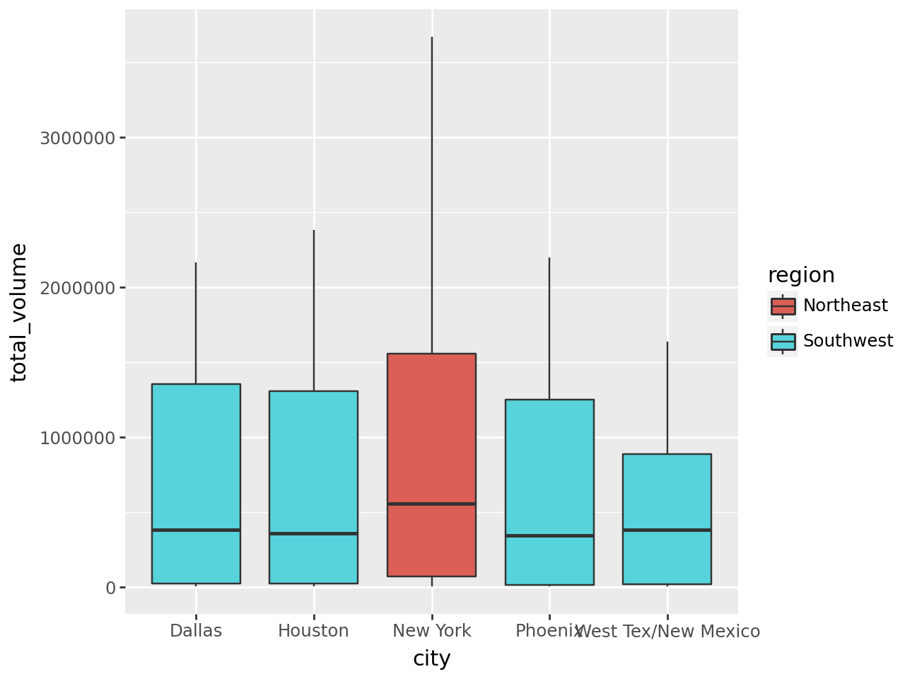
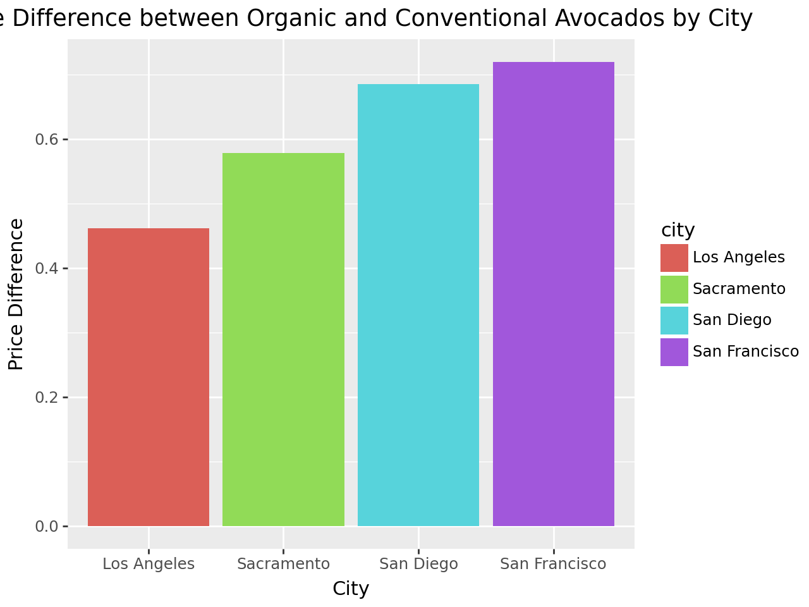
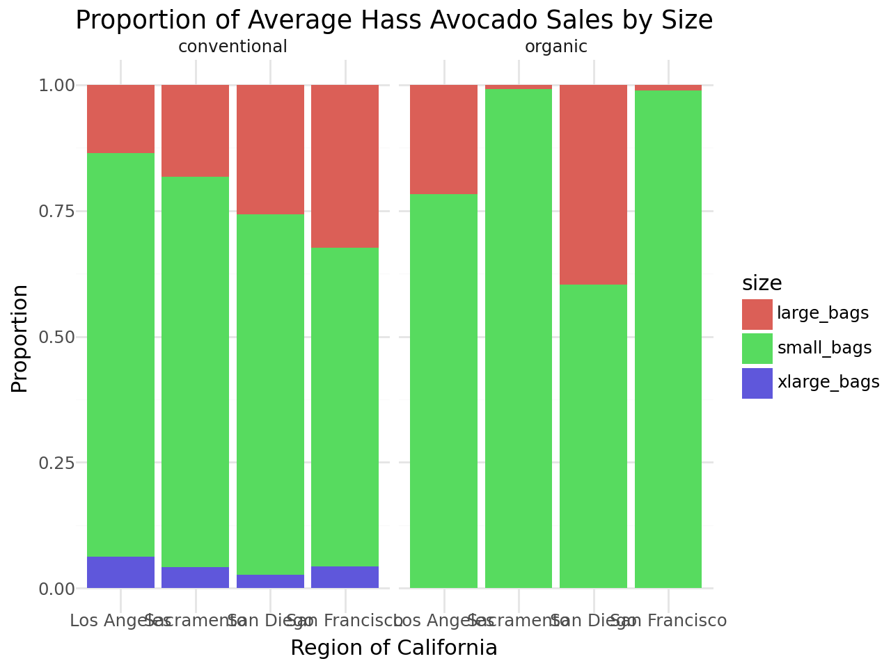

# declare packages
import numpy as np
import pandas as pd
# Import the q1data.csv dataset
df = pd.read_csv('C:/Users/17202/OneDrive/Documents/MSBA/avocado_dataset.csv')Lab 2
0. Import the data and declare your package dependencies
Q1
Briefly describe the data set. What information does it contain? * The avocados dataset contains sales information including date, amounts, product, and prices
Q2
Clean the data in any way you see fit
# change number named columns to 'small_hass', 'large_hass', and 'xl_hass'
df = df.rename(columns={'4046': 'small_hass', '4225': 'large_hass', '4770': 'xl_hass'})# mapping 'geography' and making new column 'state'
geo_to_state = {
'Albany' : 'New York',
'Atlanta' : 'Georgia',
'Baltimore/Washington' : 'Maryland',
'Boise' : 'Idaho',
'Buffalo/Rochester' : 'New York',
'California' : 'California',
'Chicago' : 'Illinois',
'Cincinnati/Dayton' : 'Ohio',
'Columbus' : 'Ohio',
'Dallas/Ft. Worth' : 'Texas',
'Denver' : 'Colorado',
'Detroit' : 'Michigan',
'Grand Rapids' : 'Michigan',
'Great Lakes' : 'Illinois',
'Harrisburg/Scranton' : 'Pennsylvania',
'Hartford/Springfield' : 'Connecticut',
'Houston' : 'Texas',
'Indianapolis' : 'Indiana',
'Jacksonville' : 'Florida',
'Las Vegas' : 'Nevada',
'Los Angeles' : 'California',
'Louisville' : 'Kentucky',
'Miami/Ft. Lauderdale' : 'Florida',
'Midsouth' : '',
'Nashville' : 'Tennesee',
'New Orleans/Mobile' : 'Louisiana',
'New York' : 'New York',
'Northeast' : '',
'Northern New England' : '',
'Orlando' : 'Florida',
'Philadelphia'
'Phoenix/Tucson' : 'Arizona',
'Pittsburgh' : 'Pennsylvania',
'Plains' : '',
'Portland' : 'Oregon',
'Raleigh/Greensboro' : 'North Carolina',
'Richmond/Norfolk' : 'Virginia',
'Roanoke' : 'Virginia',
'Sacramento' : 'California',
'San Diego' : 'California',
'San Francisco' : 'California',
'Seattle' : 'Washington',
'South Carolina' : 'South Carolina',
'South Central' : '',
'Southeast' : '',
'Spokane' : 'Washington',
'St. Louis' : 'Missouri',
'Syracuse' : 'New York',
'Tampa' : 'Florida',
'Total U.S.' : '',
'West' : '',
'West Tex/New Mexico' : 'Texas'
}
df['state'] = df['geography'].replace(geo_to_state)
# mapping 'geography' to broader US regions and making new column 'region'
geo_to_region = {
'Albany': 'Northeast',
'Atlanta': 'Southeast',
'Baltimore/Washington': 'Northeast',
'Boise': 'West',
'Boston': 'Northeast',
'Buffalo/Rochester': 'Northeast',
'California': 'West',
'Charlotte': 'Southeast',
'Chicago': 'Midwest',
'Cincinnati/Dayton': 'Midwest',
'Columbus': 'Midwest',
'Dallas/Ft. Worth': 'Southwest',
'Denver': 'West',
'Detroit': 'Midwest',
'Grand Rapids': 'Midwest',
'Great Lakes': 'Great Lakes',
'Harrisburg/Scranton': 'Northeast',
'Hartford/Springfield': 'Northeast',
'Houston': 'Southwest',
'Indianapolis': 'Midwest',
'Jacksonville': 'Southeast',
'Las Vegas': 'Southwest',
'Los Angeles': 'West',
'Louisville': 'Midsouth',
'Miami/Ft. Lauderdale': 'Southeast',
'Midsouth': 'Midsouth',
'Nashville': 'Midsouth',
'New Orleans/Mobile': 'Midsouth',
'New York': 'Northeast',
'Northeast': 'Northeast',
'Northern New England': 'Northeast',
'Orlando': 'Southeast',
'Philadelphia': 'Northeast',
'Phoenix/Tucson': 'Southwest',
'Pittsburgh': 'Northeast',
'Plains': 'Plains',
'Portland': 'West',
'Raleigh/Greensboro': 'Southeast',
'Richmond/Norfolk': 'Southeast',
'Roanoke': 'Southeast',
'Sacramento': 'West',
'San Diego': 'West',
'San Francisco': 'West',
'Seattle': 'West',
'South Carolina': 'Southeast',
'South Central': 'South Central',
'Southeast': 'Southeast',
'Spokane': 'West',
'St. Louis': 'Midwest',
'Syracuse': 'Northeast',
'Tampa': 'Southeast',
'Total U.S.': 'Other',
'West': 'West',
'West Tex/New Mexico': 'Southwest'
}
df['region'] = df['geography'].replace(geo_to_region)
df['region'] = df['region'].fillna('Unknown')# rename 'geography' to 'city'
df.rename(columns={'geography': 'city'}, inplace=True)# reduce double city values in 'city' to single values
df['city'] = df['city'].replace('Baltimore/Washington', 'Baltimore')
df['city'] = df['city'].replace('Buffalo/Rochester', 'Buffalo')
df['city'] = df['city'].replace('Dallas/Ft. Worth', 'Dallas')
df['city'] = df['city'].replace('Harrisburg/Scranton', 'Harrisburg')
df['city'] = df['city'].replace('Hartford/Springfield', "Hartford")
df['city'] = df['city'].replace('Miami/Ft. Lauderdale', 'Miami')
df['city'] = df['city'].replace('New Orleans/Mobile', 'New Orleans)')
df['city'] = df['city'].replace('Phoenix/Tucson', 'Phoenix')
df['city'] = df['city'].replace('Raleigh/Greensboro', 'Raleigh')
df['city'] = df['city'].replace('Richmond/Norfolk', 'Richmond')# make new column for total US
total_to_bool = {
'Total U.S.': True
}
df['total_US_bool'] = df['city'].replace(total_to_bool)# bool mask for 'total_US_bool'
df['total_US_bool'] = df['total_US_bool'] == True# Drop regions and tital U.S. in 'city'
drop_city = {
'Northeast': '',
'Plains': '',
'West': '',
'Great Lakes': '',
'Midsouth': '',
'South Central': '',
'Southeast': '',
'Total U.S.': '',
'California': ''
}
df['city'] = [city if city not in drop_city else '' for city in df['city']]Q3
Which major geographical region sold the most total organic, small Hass avocados in 2017?
# find sum of sh by region then calculate the max to get answer
northeast_sh_sales = df.loc[df['region'] == "Northeast", 'small_hass'].sum()
plains_sh_sales = df.loc[df['region'] == "Plains", 'small_hass'].sum()
west_sh_sales = df.loc[df['region'] == "West", 'small_hass'].sum()
greatlakes_sh_sales = df.loc[df['region'] == "Great Lakes", 'small_hass'].sum()
midsouth_sh_sales = df.loc[df['region'] == "Midsouth", 'small_hass'].sum()
southcentral_sh_sales = df.loc[df['region'] == "South Central", 'small_hass'].sum()
southeast_sh_sales = df.loc[df['region'] == "Southeast", 'small_hass'].sum()
sales_by_region = {
'Northeast': northeast_sh_sales,
'Plains': plains_sh_sales,
'West': west_sh_sales,
'Great Lakes': greatlakes_sh_sales,
'Midsouth': midsouth_sh_sales,
'South Central': southcentral_sh_sales,
'Southeast': southeast_sh_sales
}
region_highest_sh_sales = max(sales_by_region, key=sales_by_region.get)
region_highest_sh_sales'West'Q4
Split the date variable into month, day, and year variables. In which month is the highest average volume of avocado sales?
# create new date variables
df['date'] = pd.to_datetime(df['date'])
df['month'] = df['date'].dt.month
df['day'] = df['date'].dt.day
df['year'] = df['date'].dt.year# find highest month sales
monthly_avg = df.groupby('month')['total_volume'].mean()
best_month = monthly_avg.idxmax()
print(best_month)
print("May is month 5")
print("May has the highest average volume of avocado sales")5
May is month 5
May has the highest average volume of avocado salesQ5
Which metro area geographical regions sold the most total avocados? Plot side-by-side box-plots of the total volume for only the five metro geographical regions with the highest averages for the total_volume variable
# find highest city sales (remeber the first best_city would return a blank for .index[0] and .index[1] because total U.S. and california have been dropped as values from the column)
city_avg = df.groupby('city')['total_volume'].mean()
best_city = city_avg.sort_values(ascending=False).index[2]
print(best_city)
print(f"The metro region with the most avocado sales is {best_city}")New York
The metro region with the most avocado sales is New York# make top5 list
top_5 = city_avg.sort_values(ascending=False).index[2:7]
print(list(top_5))['New York', 'Dallas', 'Houston', 'Phoenix', 'West Tex/New Mexico']#make new top5 df
df_top5 = df[df['city'].isin(top_5)]# create top5 box plots
from plotnine import ggplot, aes, geom_boxplot
(ggplot(df_top5,
aes(
x = 'city',
y = 'total_volume',
fill = 'region'
))
+ geom_boxplot()
)
Q6
From your cleaned data set, create a data set with only these California regions and answer the following questions about these California regions only: - “Los Angeles”, “San Diego”, “Sacramento”, and “San Francisco”.
df_cali = df[df['city'].isin(["Los Angeles", "San Diego", "Sacramento", "San Francisco"])]Q7
In which California regions is the price of organic versus conventional avocados most different? Support your answer with a few summary statistics AND a visualization
# calculate price differences
la_org_price = df_cali[(df_cali['city'] == 'Los Angeles') & (df_cali['type'] == 'organic')]['average_price'].mean()
la_conv_price = df_cali[(df_cali['city'] == 'San Diego') & (df_cali['type'] == 'conventional')]['average_price'].mean()
la_price_dif = la_org_price - la_conv_price
sd_org_price = df_cali[(df_cali['city'] == 'San Diego') & (df_cali['type'] == 'organic')]['average_price'].mean()
sd_conv_price = df_cali[(df_cali['city'] == 'San Diego') & (df_cali['type'] == 'conventional')]['average_price'].mean()
sd_price_dif = sd_org_price - sd_conv_price
sac_org_price = df_cali[(df_cali['city'] == 'Sacramento') & (df_cali['type'] == 'organic')]['average_price'].mean()
sac_conv_price = df_cali[(df_cali['city'] == 'Sacramento') & (df_cali['type'] == 'conventional')]['average_price'].mean()
sac_price_dif = sac_org_price - sac_conv_price
sf_org_price = df_cali[(df_cali['city'] == 'San Francisco') & (df_cali['type'] == 'organic')]['average_price'].mean()
sf_conv_price = df_cali[(df_cali['city'] == 'San Francisco') & (df_cali['type'] == 'conventional')]['average_price'].mean()
sf_price_dif = sf_org_price - sf_conv_price
org_v_conv = [la_price_dif, sd_price_dif, sac_price_dif, sf_price_dif]
print(org_v_conv)
print(f"San Francisco has the most price difference between organic and conventional with a difference of {sf_price_dif}")[0.461045751633987, 0.6845098039215689, 0.5784967320261438, 0.7189542483660132]
San Francisco has the most price difference between organic and conventional with a difference of 0.7189542483660132type_summary = [['Los Angeles', la_org_price, la_conv_price, la_price_dif],
['San Diego', sd_org_price, sd_conv_price, sd_price_dif],
['Sacramento', sac_org_price, sac_conv_price, sac_price_dif],
['San Francisco', sf_org_price, sf_conv_price, sf_price_dif]]
df_price = pd.DataFrame(type_summary,
columns=['city', 'org_prices', 'conv_prices', 'price_dif'])
df_price| city | org_prices | conv_prices | price_dif | |
|---|---|---|---|---|
| 0 | Los Angeles | 1.574902 | 1.113856 | 0.461046 |
| 1 | San Diego | 1.798366 | 1.113856 | 0.684510 |
| 2 | Sacramento | 1.873856 | 1.295359 | 0.578497 |
| 3 | San Francisco | 2.119444 | 1.400490 | 0.718954 |
from plotnine import geom_bar, facet_wrap, scale_x_discrete, labs
(ggplot(df_price,
aes(
x='city',
y='price_dif',
fill='city'
))
+ geom_bar(stat='identity')
+ labs(title="Price Difference between Organic and Conventional Avocados by City",
x="City",
y="Price Difference")
)
Q8
The following plot shows, for all four California regions, the proportion of the average Hass avocado sales that are small, large, or extra large; conventional vs. organic. Recreate the plot; you do not have to replicate the exact finishing touches - e.g., color, theme - but your plot should resemble the content of this plot.
df_cali| date | average_price | total_volume | small_hass | large_hass | xl_hass | total_bags | small_bags | large_bags | xlarge_bags | type | year | city | state | region | total_US_bool | month | day | |
|---|---|---|---|---|---|---|---|---|---|---|---|---|---|---|---|---|---|---|
| 44 | 2015-01-04 | 0.85 | 2682159.95 | 1837999.65 | 524430.47 | 64225.78 | 255504.05 | 215571.80 | 36981.72 | 2950.53 | conventional | 2015 | Los Angeles | California | West | False | 1 | 4 |
| 45 | 2015-01-04 | 1.25 | 54495.54 | 47721.51 | 1723.40 | 0.00 | 5050.63 | 5050.63 | 0.00 | 0.00 | organic | 2015 | Los Angeles | California | West | False | 1 | 4 |
| 80 | 2015-01-04 | 1.05 | 430138.88 | 110693.69 | 270107.61 | 9737.50 | 39600.08 | 39600.08 | 0.00 | 0.00 | conventional | 2015 | Sacramento | California | West | False | 1 | 4 |
| 81 | 2015-01-04 | 1.33 | 9213.49 | 3727.52 | 4327.52 | 0.00 | 1158.45 | 1158.45 | 0.00 | 0.00 | organic | 2015 | Sacramento | California | West | False | 1 | 4 |
| 82 | 2015-01-04 | 0.94 | 461607.33 | 244152.26 | 165299.33 | 15302.75 | 36852.99 | 30884.29 | 5595.00 | 373.70 | conventional | 2015 | San Diego | California | West | False | 1 | 4 |
| ... | ... | ... | ... | ... | ... | ... | ... | ... | ... | ... | ... | ... | ... | ... | ... | ... | ... | ... |
| 33018 | 2020-11-29 | 1.43 | 23531.38 | 3303.69 | 2057.03 | 0.00 | 18170.66 | 18144.54 | 26.12 | 0.00 | organic | 2020 | Sacramento | California | West | False | 11 | 29 |
| 33019 | 2020-11-29 | 1.12 | 469356.72 | 104509.99 | 19988.45 | 7210.47 | 337647.81 | 189341.36 | 127701.64 | 20604.81 | conventional | 2020 | San Diego | California | West | False | 11 | 29 |
| 33020 | 2020-11-29 | 1.95 | 25799.95 | 894.63 | 838.11 | 0.00 | 24067.21 | 9691.46 | 14375.75 | 0.00 | organic | 2020 | San Diego | California | West | False | 11 | 29 |
| 33021 | 2020-11-29 | 1.50 | 644141.37 | 128555.43 | 136718.24 | 5597.21 | 373270.49 | 159276.65 | 207760.32 | 6233.52 | conventional | 2020 | San Francisco | California | West | False | 11 | 29 |
| 33022 | 2020-11-29 | 1.87 | 59527.02 | 2815.23 | 4542.30 | 0.00 | 52169.49 | 52034.33 | 135.16 | 0.00 | organic | 2020 | San Francisco | California | West | False | 11 | 29 |
2448 rows × 18 columns
# First, melt the DataFrame to get a 'size' column
df_cali_melt = df_cali.melt(
id_vars=['city', 'type', 'total_volume'],
value_vars=['small_bags', 'large_bags', 'xlarge_bags'],
var_name='size',
value_name='sales'
)
df_cali_melt['proportion'] = df_cali_melt.groupby(['city', 'type'])['sales'].transform(lambda x: x / x.sum())
df_cali_melt| city | type | total_volume | size | sales | proportion | |
|---|---|---|---|---|---|---|
| 0 | Los Angeles | conventional | 2682159.95 | small_bags | 215571.80 | 0.000533 |
| 1 | Los Angeles | organic | 54495.54 | small_bags | 5050.63 | 0.000254 |
| 2 | Sacramento | conventional | 430138.88 | small_bags | 39600.08 | 0.001509 |
| 3 | Sacramento | organic | 9213.49 | small_bags | 1158.45 | 0.000877 |
| 4 | San Diego | conventional | 461607.33 | small_bags | 30884.29 | 0.000445 |
| ... | ... | ... | ... | ... | ... | ... |
| 7339 | Sacramento | organic | 23531.38 | xlarge_bags | 0.00 | 0.000000 |
| 7340 | San Diego | conventional | 469356.72 | xlarge_bags | 20604.81 | 0.000297 |
| 7341 | San Diego | organic | 25799.95 | xlarge_bags | 0.00 | 0.000000 |
| 7342 | San Francisco | conventional | 644141.37 | xlarge_bags | 6233.52 | 0.000112 |
| 7343 | San Francisco | organic | 59527.02 | xlarge_bags | 0.00 | 0.000000 |
7344 rows × 6 columns
from plotnine import facet_grid, labs, theme_minimal
# Create the stacked bar plot
(ggplot(df_cali_melt, aes(
x='city',
y='proportion',
fill='size'
))
+ geom_bar(stat='identity', position='fill')
+ facet_grid('. ~ type')
+ labs(title='Proportion of Average Hass Avocado Sales by Size', x='Region of California', y='Proportion')
+ theme_minimal()
)